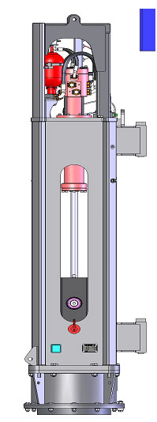
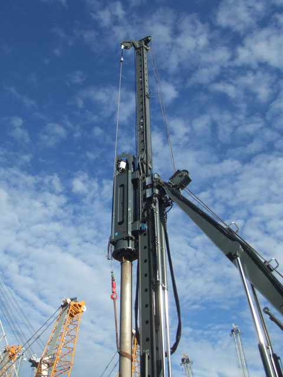
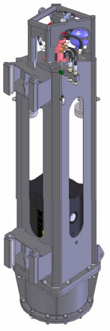

Лёгкие гидравлические молоты LX
Погружение стальных, бетонных и деревянных свай. Питание от гидростанции BSP, свайной установки или гидравлического крана.
Модели и исполнения
Запросить комплектациюХарактеристики зависят от исполнения цилиндра. Эквивалентный ход для одностороннего действия — 0,8 м, для двустороннего — 1,2 м.
Фотографии и материалы серии





